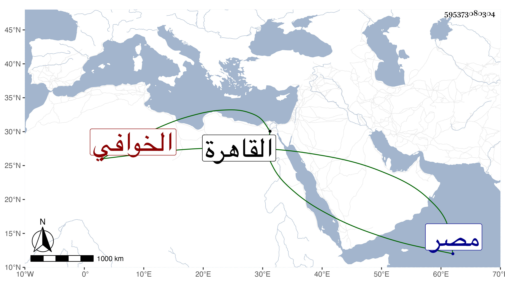

0902Sakhawi.DawLamic.ITO20230111-ara1.EIS1600.595373080304
Biography ID: 595373080304
915
إسماعيل بن أبي بكر واسمه محمد بن علي الخوافي الآتي أبوه ، قدم القاهرة معه في سنة أربع وعشرين وثمانمائة فقال لشيخنا :
| أقمت بمصر يا صدر الأعالي | وصيتك في العوالم غير خاف |
| وزينت الورى جيلا فجيلا | فشرفت القوادم والخوافي |
